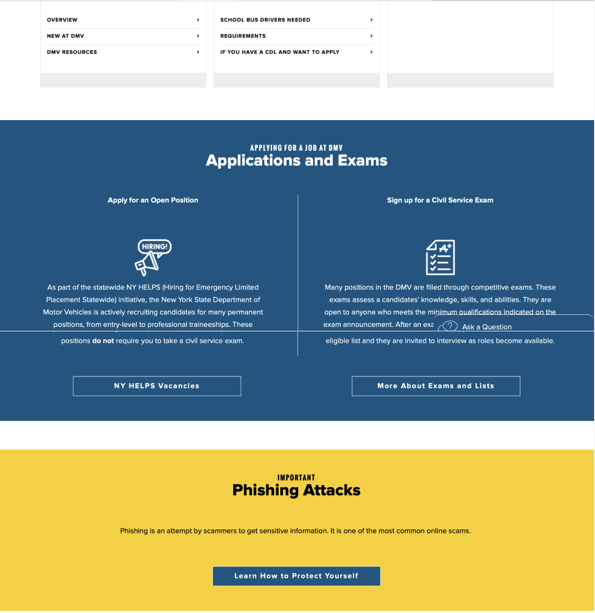

Original Design


Making government websites more intuitive, accessible, and human-centered.
Government websites are often cluttered, confusing, and not built with accessibility in mind. The DMV site needed to reflect clarity and ease of use for a diverse user base.
UX Designer & Researcher
Figma, Photoshop, HTML/CSS
3 Weeks

This project showed me how meaningful UX design can be in real-life scenarios. Government services are for everyone, and the redesign made accessibility and simplicity the priority. From layout planning to final visuals, each step reinforced the importance of usability and visual clarity.